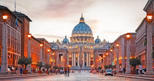
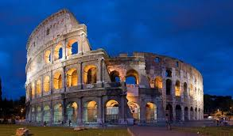
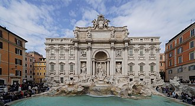

Rzym
Rzym ::: Tallinn ::: Helsinki :::
Rzym powstał w epoce żelaza, jako osada Latynów, usytuowana na szczycie Palatynu. Jego mieszkańcy byli prostymi pasterzami owiec (około 800–750 p.n.e.). Z czasem zajęli się rzemiosłem i handlem z sąsiadami (bogactwo Rzymu pochodziło ze sprzedaży soli pozyskiwanej w salinach u ujścia Tybru). Ludności zaczęło przybywać i zasiedlono Eskwilin i Kapitol. Według tradycji, przekazanej przez Liwiusza, Rzym założył Romulus 21 kwietnia 753 p.n.e. i został jego pierwszym królem. Od tej daty liczona była historia miasta – „Ab urbe condita” lub A.U.C. (od założenia miasta, zobacz też kalendarz rzymski). Jak podaje Gajusz Juliusz Solinus, zdaniem niektórych starożytnych historyków pierwszym, który użył nazwy Roma, był Ewander[8]. Wedle legendy wkrótce po założeniu miasta Rzymianie z powodu braku kobiet w mieście postanowili je zdobyć, napadając osadę sąsiednich Sabinów, położoną na wzgórzu Kwirynale. Zuchwały plan porwania Sabinek powiódł się. Gdy Sabinowie próbowali odbić kobiety, te namówiły ich do zawarcia rozejmu, a potem sojuszu z Rzymianami (zobacz: porwanie Sabinek). W rzeczywistości między Rzymianami i Sabinami faktycznie musiało dojść do unii około połowy VIII w. p.n.e.
ZABYTKI
BAZYLIKA ŚW. PIOTRA

Bazylika Świętego Piotra na Watykanie (wł. Basilica Papale di San Pietro in Vaticano; łac. Basilica Sancti Petri) – rzymskokatolicka bazylika na Wzgórzu Watykańskim, zbudowana w latach 1506–1626, na miejscu starszej bazyliki wczesnochrześcijańskiej, fundacji cesarza Konstantyna Wielkiego, jedna z czterech bazylik większych Rzymu oraz jedna z wielu bazylik papieskich (dawniej patriarchalnych), sanktuarium, jeden z najważniejszych ośrodków pielgrzymkowych.
KOLOSEUM

Jest to duża, eliptyczna budowla o długości 188 m i szerokości 156 m, obwodzie 524 m, wysokości 48,5 m, z pojemną widownią, która mogła pomieścić od 45 do 50 tysięcy widzów[2]; z galeriami komunikacyjnymi oraz areną z systemem podziemnych korytarzy. W czterokondygnacyjnym podziale zewnętrznym zastosowano spiętrzenie porządków (najniższa kondygnacja w porządku toskańskim, druga w jońskim, trzecia w korynckim). Trzy niższe kondygnacje związane są z konstrukcyjnym układem arkad, czwarta, najwyższa została zaopatrzona tylko w małe okna. Od strony wewnętrznej budowla jest pięciokondygnacyjna. Cztery kondygnacje zbudowano jako układ pomieszczeń wydzielonych pomiędzy filarami, ścianami, ze sklepieniami kolebkowymi i krzyżowymi. Umieszczono tam bufety, szatnie, natryski, pomieszczenia dla gladiatorów, klatki dla zwierząt, korytarze. Wokół areny wzniesione było podium. Do Koloseum prowadziło 80 ponumerowanych wejść (zachowały się oznaczenia wejść od nr XXIII do LIV), które zapewniały szybkie (przez ok. 6 minut) opuszczenie widowni przez widzów (jednak taką możliwość mieli tylko widzowie z dolnych i środkowych rzędów). Istniała też możliwość przykrycia całej widowni specjalną osłoną (velarium) w deszczowe lub bardzo słoneczne dni.
FONTANNA DI TREVI

Klemens XII w 1732 ogłosił konkurs na nową fontannę. Papież wybrał projekt Niccolò Salvi. Prace trwały od 1735 do 1776. Sam autor projektu nie dożył zakończenia budowy. Forma tej barokowej fontanny przypomina fasadę budynku, ma 20,0 m szerokości i 26,0 m wysokości. Centralnymi postaciami fontanny są Okeanos i dwa trytony, będące symbolami Kastora i Polluksa. Bóstwo oceanów znajduje się na rydwanie zaprzężonym w dwa hippokampy (hybrydy konia i ryby), z których jeden jest spokojny, prowadzony przez trytona z prawej strony, tryton z lewej strony natomiast stara się okiełznać niespokojnego konia. Symbolizują one dwa odmienne stany morza (cisza i sztorm)[1]. Cztery statuy umieszczone na balustradzie symbolizują cztery pory roku (są to dzieła Corsiniego, Ludovisiego, Pincellottiego i Queirolego). W sąsiednich niszach znajdują się kobiece postaci będące alegoriami Zdrowia (po prawej) i Obfitości (po lewej).
PANTEON
.jpg)
Panteon, pierwotnie zbudowany jako świątynia poświęcona wszystkim rzymskim bogom, obejmował również cześć dla cesarza, który był często uważany za postać boską lub żywego boga w okresie Cesarstwa Rzymskiego. Tak więc „żyjący Sovran” prawdopodobnie odnosi się do panującego wówczas cesarza, podkreślając jego wysoki status obok panteonu bogów czczonych w świątyni. Od VII wieku Panteon jest użytkowany jako katolicki kościół pw. Santa Maria ad Martyres (pol. Najświętszej Marii Panny od Męczenników).
Jest jedną z najlepiej zachowanych budowli z czasów starożytnego Rzymu. 42-metrowa kopuła Santa Maria del Fiore Filippo Bruneleschiego we Florencji została wybudowana na wzór tej z Rzymu. Na panteonie wzorowany jest także warszawski kościół św. Aleksandra przy placu Trzech Krzyży.
BAZYLIKA ŚW. PIOTRA

Bazylika Świętego Piotra na Watykanie (wł. Basilica Papale di San Pietro in Vaticano; łac. Basilica Sancti Petri) – rzymskokatolicka bazylika na Wzgórzu Watykańskim, zbudowana w latach 1506–1626, na miejscu starszej bazyliki wczesnochrześcijańskiej, fundacji cesarza Konstantyna Wielkiego, jedna z czterech bazylik większych Rzymu oraz jedna z wielu bazylik papieskich (dawniej patriarchalnych), sanktuarium, jeden z najważniejszych ośrodków pielgrzymkowych.
KOLOSEUM

Jest to duża, eliptyczna budowla o długości 188 m i szerokości 156 m, obwodzie 524 m, wysokości 48,5 m, z pojemną widownią, która mogła pomieścić od 45 do 50 tysięcy widzów[2]; z galeriami komunikacyjnymi oraz areną z systemem podziemnych korytarzy. W czterokondygnacyjnym podziale zewnętrznym zastosowano spiętrzenie porządków (najniższa kondygnacja w porządku toskańskim, druga w jońskim, trzecia w korynckim). Trzy niższe kondygnacje związane są z konstrukcyjnym układem arkad, czwarta, najwyższa została zaopatrzona tylko w małe okna. Od strony wewnętrznej budowla jest pięciokondygnacyjna. Cztery kondygnacje zbudowano jako układ pomieszczeń wydzielonych pomiędzy filarami, ścianami, ze sklepieniami kolebkowymi i krzyżowymi. Umieszczono tam bufety, szatnie, natryski, pomieszczenia dla gladiatorów, klatki dla zwierząt, korytarze. Wokół areny wzniesione było podium. Do Koloseum prowadziło 80 ponumerowanych wejść (zachowały się oznaczenia wejść od nr XXIII do LIV), które zapewniały szybkie (przez ok. 6 minut) opuszczenie widowni przez widzów (jednak taką możliwość mieli tylko widzowie z dolnych i środkowych rzędów). Istniała też możliwość przykrycia całej widowni specjalną osłoną (velarium) w deszczowe lub bardzo słoneczne dni.
FONTANNA DI TREVI

Klemens XII w 1732 ogłosił konkurs na nową fontannę. Papież wybrał projekt Niccolò Salvi. Prace trwały od 1735 do 1776. Sam autor projektu nie dożył zakończenia budowy. Forma tej barokowej fontanny przypomina fasadę budynku, ma 20,0 m szerokości i 26,0 m wysokości. Centralnymi postaciami fontanny są Okeanos i dwa trytony, będące symbolami Kastora i Polluksa. Bóstwo oceanów znajduje się na rydwanie zaprzężonym w dwa hippokampy (hybrydy konia i ryby), z których jeden jest spokojny, prowadzony przez trytona z prawej strony, tryton z lewej strony natomiast stara się okiełznać niespokojnego konia. Symbolizują one dwa odmienne stany morza (cisza i sztorm)[1]. Cztery statuy umieszczone na balustradzie symbolizują cztery pory roku (są to dzieła Corsiniego, Ludovisiego, Pincellottiego i Queirolego). W sąsiednich niszach znajdują się kobiece postaci będące alegoriami Zdrowia (po prawej) i Obfitości (po lewej).
PANTEON
Panteon, pierwotnie zbudowany jako świątynia poświęcona wszystkim rzymskim bogom, obejmował również cześć dla cesarza, który był często uważany za postać boską lub żywego boga w okresie Cesarstwa Rzymskiego. Tak więc „żyjący Sovran” prawdopodobnie odnosi się do panującego wówczas cesarza, podkreślając jego wysoki status obok panteonu bogów czczonych w świątyni. Od VII wieku Panteon jest użytkowany jako katolicki kościół pw. Santa Maria ad Martyres (pol. Najświętszej Marii Panny od Męczenników). Jest jedną z najlepiej zachowanych budowli z czasów starożytnego Rzymu. 42-metrowa kopuła Santa Maria del Fiore Filippo Bruneleschiego we Florencji została wybudowana na wzór tej z Rzymu. Na panteonie wzorowany jest także warszawski kościół św. Aleksandra przy placu Trzech Krzyży.